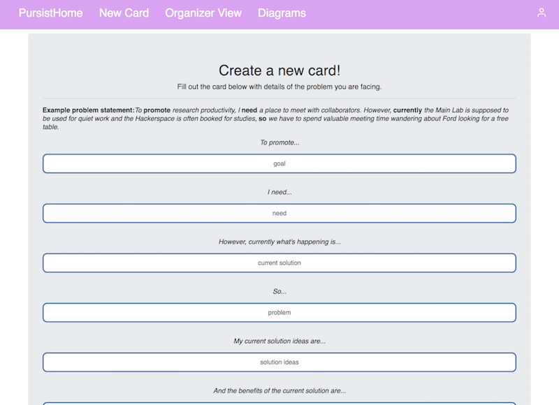
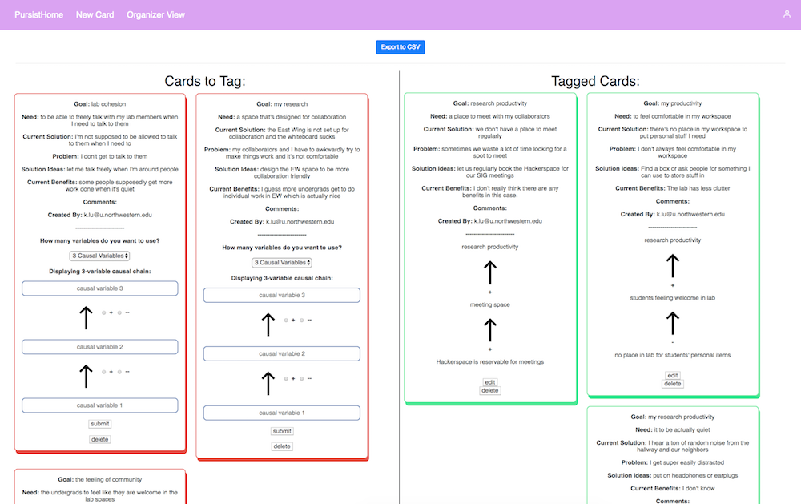

Overview
PurSIST (Stakeholder Input Synthesis Tool), currently available on Heroku, is a web application tool designed to improve lab meeting productivity by providing an interface for meeting attendees to submit problem statements such that the meeting organizers can then tag the cards with causal variables, leading to a better visualization and organization system for lab issues.
Skills
- PostgreSQL
- Express, Javascript
- HTML/Pug, CSS
- Agile Development Practices
- Client and Large Group Management and Communication
|  | Meeting attendees can enter problem statements into this standardized template. |
|  | Meeting organizers can view the submitted problems and tag them to create a causal diagram about the overall problems on the cards. |
Development
Takeaways/Future Plans